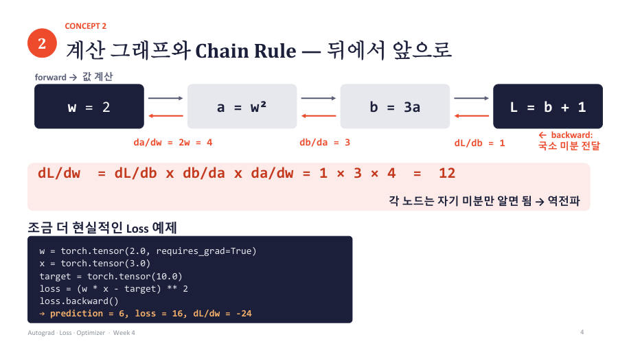

계산 그래프와 chain rule — 뒤에서 앞으로 곱하기 ★★
모델은 계산이 여러 단계로 이어져 있어요. PyTorch는 계산한 순서를 지도처럼 기록해 두는데 이것이 계산 그래프예요. 그리고 기울기를 구할 때는 이 지도를 뒤에서 앞으로 거슬러 가요.
톱니바퀴가 3개 이어져 있다고 생각해 보세요. 첫 톱니를 1바퀴 돌릴 때 마지막 톱니가 몇 바퀴 도는지는 각 톱니바퀴 사이의 비율을 곱하면 나와요. chain rule(연쇄 법칙)이 바로 "각 단계의 변화 비율을 차례로 곱하기"예요.
교수님 자료의 예제예요. w = 2일 때 a = w², b = 3a, L = b + 1이에요.
| 코드 줄 | 무슨 뜻 |
|---|---|
a = w ** 2 | a = 2² = 4 |
b = 3 * a | b = 3 × 4 = 12 |
L = b + 1 | L = 12 + 1 = 13 |
L.backward() | 뒤에서부터 각 단계의 비율을 곱해요. 1 × 3 × 4 = 12 |
.item() | 숫자 하나짜리 Tensor에서 순수한 파이썬 숫자를 꺼내요. |
한 번에 미분해도 같은 값이에요. L = 3w² + 1이니까 기울기는 6w이고, w = 2를 넣으면 12예요. 각 단계가 자기 비율만 알면 되기 때문에, 층이 수십 개인 모델도 같은 방식으로 계산할 수 있어요. 이 과정이 신경망의 역전파(backpropagation)예요.
조금 더 모델다운 예제도 볼게요. 예측값 = w × x, 손실 = (예측값 − 정답)²이에요. w = 2, x = 3, 정답 = 10을 넣어요.
- 예측값 = 2 × 3 = 6
- loss = (6 − 10)² = 16
- loss를 예측값으로 미분하면 2 × (6 − 10) = −8, 예측값을 w로 미분하면 x = 3이에요. 곱하면 −8 × 3 = −24예요.
기울기가 −24로 음수예요. w를 늘리면 예측값이 10에 가까워지니 loss가 줄어든다는 뜻이에요. 6-1의 표와 맞아요. 또한 기울기는 w의 현재 값을 정한 다음에야 구할 수 있어요. 위치마다 경사가 다르기 때문이에요.

기울기 값을 묻는 문제는 ① 앞으로 계산해 중간 값(예측값, loss)을 구하고 ② loss를 w로 미분해서 ③ w, x의 숫자를 넣어요. 위 예제에서 w=2, x=3, 정답 10이면 −24예요. 이 숫자들은 교수님 자료에 나온 값이라서 그대로 외워 두면 비슷한 문제에 바로 쓸 수 있어요.
잠깐 확인 — w=2에서 a=w², b=3a, L=b+1일 때 dL/dw를 chain rule로 쓰면?
1 × 3 × 4 = 12예요. dL/db = 1, db/da = 3, da/dw = 2w = 4를 곱해요.
화면을 가리고 "계산 그래프와 chain rule — 뒤에서 앞으로 곱하기 ★★"을(를) 친구에게 설명하듯 한 문장으로 말해 보세요. 막히면 위의 빨간 칸만 다시 보고 넘어가요.
자료: 6주차 · Week04_Autograd_Loss_Optimizer · 6주차 녹취(빅데이터06), 7주차 녹취(빅데이터07)